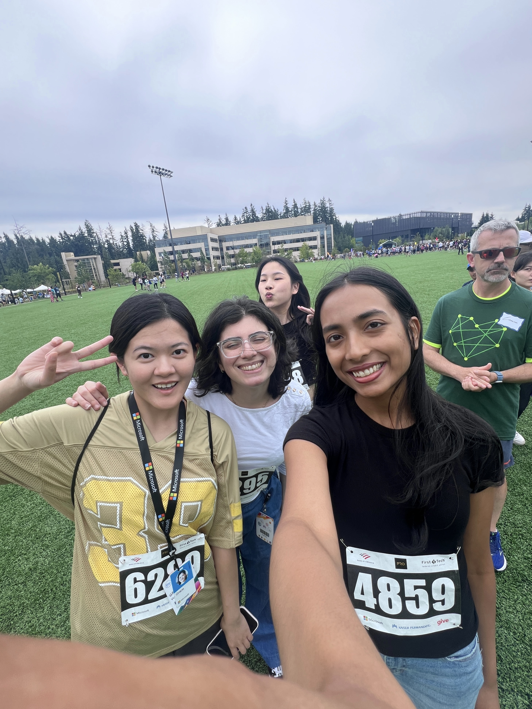
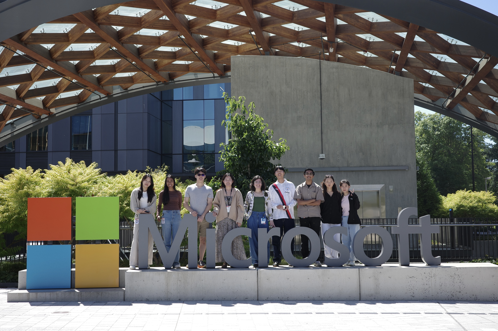
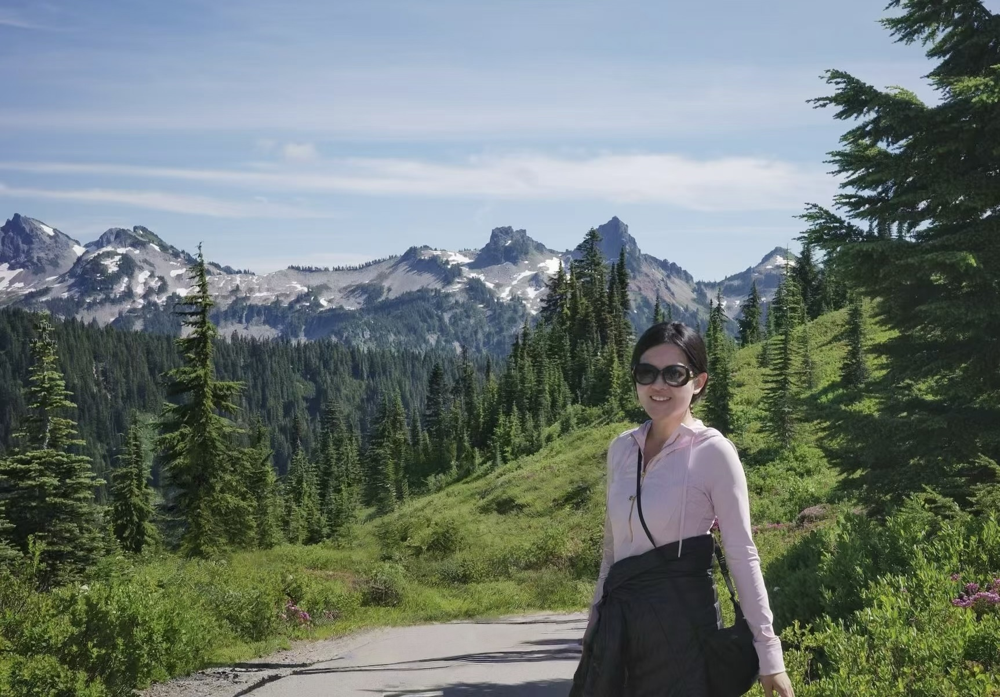

Where I've Worked
Research, industry, and everything in between — from medical AI to LLM interpretability to quantitative trading.
Quant Trading Intern
Upcoming.
Research Intern
First author on "Do Mixed-Vendor Multi-Agent LLMs Improve Clinical Diagnosis?", accepted as an oral presentation at the EACL 2026 HeaLing Workshop.
Designed mixed-vendor systems combining o4-mini, Gemini, and Claude to mitigate correlated failure modes in medical reasoning. Achieved state-of-the-art accuracy on RareBench and DiagnosisArena by pooling complementary model inductive biases.
AI/ML Intern
Developed a multilingual multiclass embedding-based classifier with dynamic k-means clustering, improving recall by 20% and F1 by 13% compared to the existing English-only baseline model.
Built a diagnostic AI agent that aggregates daily error logs, performs automated root-cause analysis, and delivers concise reports to the AI Agent team.
Beyond the work, I'm grateful for a wonderful team and the amazing intern friends I made along the way. I also took the chance to explore the Pacific Northwest — visiting Olympic National Park and Mount Rainier. It was a great summer in the Seattle area.




Research Intern
Collaborated with IBM researchers under Prof. Antonio Torralba's supervision to investigate the internal mechanisms of LLMs. Visualized and analyzed internal representations to elucidate how model components interact to produce specific outputs.
SERC Research Scholar
Led research on social bias in LLM-driven tabular classification, targeting high-stakes sectors such as finance, healthcare, and hiring. Analyzed how stereotypes and demographic attributes influence classification outcomes in models like Llama and DeepSeek.
Lab Assistant & Grader
Assisted in MIT courses including Theory of Computation (Grader), Introduction to Machine Learning (LA), Introduction to Algorithms (Grader), and Fundamentals of Programming (LA), guiding students through assignments and labs.